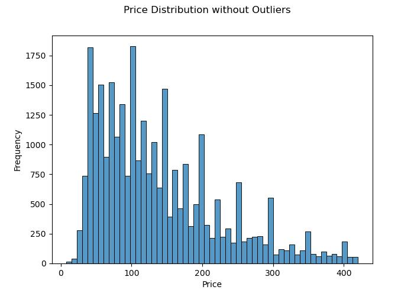
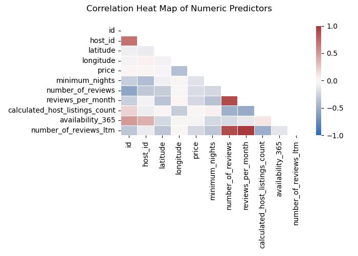
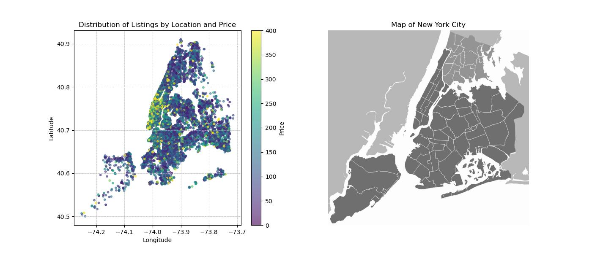
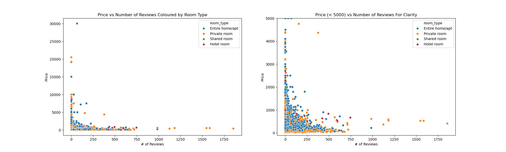
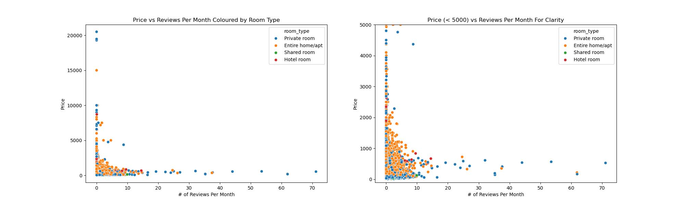
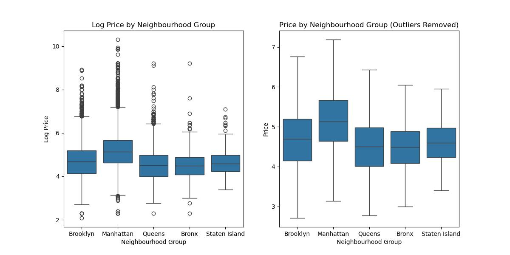
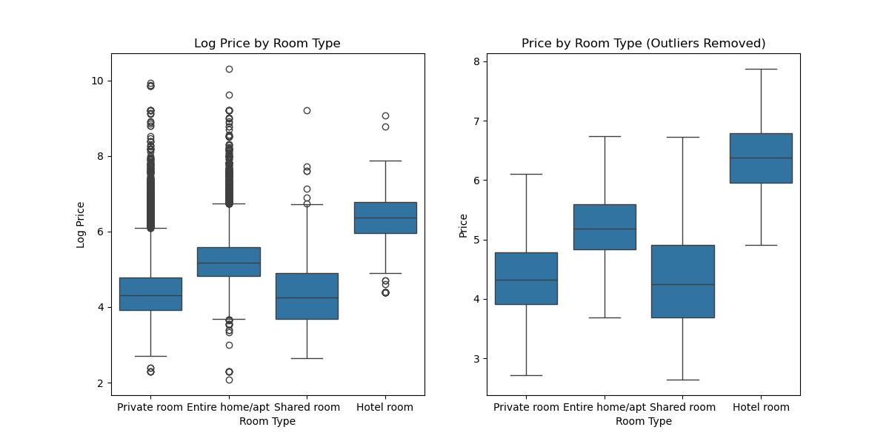

| Variable_1 | Variable_2 | Correlation |
|---|---|---|
| reviews_per_month | number_of_reviews_ltm | 0.868967 |
| reviews_per_month | number_of_reviews | 0.667408 |
| number_of_reviews | number_of_reviews_ltm | 0.644432 |
| host_id | id | 0.467936 |
| availability_365 | id | 0.34358 |
| availability_365 | host_id | 0.272284 |
| id | number_of_reviews | -0.225269 |
| id | calculated_host_listings_count | 0.171189 |
| calculated_host_listings_count | availability_365 | 0.138149 |
| reviews_per_month | host_id | 0.138031 |
Predicting the Price of New York City Airbnbs (DSCI 310 Group 9)
Summary
We are developing a classification model using a KNN machine learning algorithm to categorize Airbnb listing prices into various ranges. The goal is to accurately assign each listing to a price bracket, starting at $0 and increasing in $50 increments up to $350 and above.
Our research question for this analysis is: How do geographical distribution, review trends, and the introduction of Local Law 18 influence the pricing and popularity of Airbnb listings across different boroughs in New York City?
The classifier is designed to help potential guests estimate the price range of a rental before detailed information is provided. The performance of our model on the test data set indicates varying degrees of precision and recall across different price categories, with an overall accuracy of 0.51. Given that the data set consists of 7926 instances, the model shows promise, but there is significant room for improvement. Particular attention should be given to enhancing the performance for categories that currently show lower F1-scores. Further analysis is needed to understand the features that most affect price prediction accuracy and to refine the model for better performance across all price ranges.
Introduction
Airbnb has been one of the most popular short-term stays and rental online services since 2008, expanding to over a thousand cities in less than a year (Geron 2009). Owing to its exponential growth however, many metropolises such as Paris, London, Berlin, and New York City started introducing special rules and laws for creating a listing on Airbnb due to its impact on housing shortages and rental markets (Tun 2023). In September 2023, New York enforced a measure called Local Law 18 (Oladipo 2023), that was essentially a de facto ban on short-term rentals that would force the amount of listings to decrease 85% within the month (Chan 2023), and decrease over 90% as of 2024 from what they were in 2022 (Bellafante 2024). Consequently, this led average prices to surge, and led us to want to investigate factors of New York Airbnbs and how they impact listing prices.
We were able to obtain a workable and descriptive dataset about New York Airbnbs from insideairbnb.com (Inside Airbnb 2024) that gave insight into every listing from 2011 to 2023 and their reviews. The fields present in our dataset are:
- ID: Unique identifier for listing
- Name: Name of listing, followed by rating and type (e.g. 1 bed 1 bath)
- Host ID: Unique identifier for host
- Host Name: Name of host
- Neighbourhood: Neighbourhood where listing is located
- Neighbourhood Group: Borough where listing is located
- Latitude: Latitudinal coordinate of listing location
- Longitude: Longitudinal coordinate of listing location
- Room Type: Listing space type (Private room, Entire home / Apt., etc.)
- Price: Price per Night in USD
- Minimum Nights: Minimum nights required to stay at the rental
- Number of Reviews: Total number of reviews on the listing
- Last Review: Date of latest review on the rental
- Reviews Per Month: Avg. monthly number of reviews on the listing
- Calculated Host Listings Count: Number of listings the corresponding host has
- Availability 365: Number of days in a year listing is available for booking
Here we intend to use a machine learning algorithm to answer the research question:
How do geographical distribution, review trends, and the introduction of Local Law 18 influence the pricing and popularity of Airbnb listings across different boroughs in New York City?
There have been multiple studies looking into how the Airbnb ban impacts NYC rental (Fields 2023) and hotel prices (Kelly 2023), but not as much into the Airbnb prices themselves. Since our investigation will be solely based on data up until 2023, it can be used glean exactly how these restrictions impacted Airbnb prices in NYC when compared with information from 2024 onwards (i.e. was it because the number of listings per host went down? Or was it because the minimum number of nights required to stay went up? and more questions like that). As Airbnb prices can range to various amounts, we will look to bin prices into different categories in increments of 50. This will help us provide a more accurate range of price recommendations when looking at different Airbnb listings.
Methods
The Python programming language (Van Rossum and Drake 2009) and the following Python packages were primarily used to perform the analysis: pandas (McKinney 2010), scikitlearn (Pedregosa et al. 2011), click (Team 2020), as well as Quarto (Allaire et al. 2022).
As previously mentioned, we loaded data from insideairbnb.com (Inside Airbnb 2024).
Takeaways From Preliminary EDA
We have 39627 rows and 18 features which includes
price. We decided it was a good idea to generate aprice_categoryvariable as our target variable that classified the price into bins / brackets starting at $0 and increasing in $50 increments up to $350 +.We identified that
nameis text type data which could provide some valuable insights. We can also infer that any id information (idandhost_id) and variables such ashost_namewill not provide any key information, thus, we can drop them for our data analysis.The column
host_namehad 15 null values but it is not a roadblock since we dropped this column. Ourreviews_per_monthcolumn andlast_reviewcolumn have 11480 null values each. This suggests that when a airbnb listing doesn’t have a review, it was listed as a null value in the data. To fix this we could impute 0 into the nulls forreviews_per_month. Forlast_review, we decided it would be appropriate to drop the column as some of the information it provides is stored in reviews per month.licensehas a significant number of null values with 35268. It might provide some interesting insights into price as a license is proof that the airbnb owners comply with the regulatory standards, but since the nature of these missing values is unknown, we cannot be sure if the null values means the listing has no license. Due to this imbalance in the data, we decided it best to drop this column. However, it could be worth exploring the relationship between license and other variables in future analyses.
Next Steps for Feature Engineering
In order to prepare our data for further analysis we performed some preliminary feature engineering: - Converted id and host_id into object datatypes to prepare them to be dropped. - Imputed zeros into the reviews_per_month null values. - Segregated fields into target column, categorical, numerical, text data, and drop data. - Created a price category variable.
After this cleaning, we split the data into training and test sets.
Spread of price Visualized
We plotted a histogram for our price variable to graph its’ spread on Figure 1 below.

Relationships between Predictors Visualized
We examined the correlations between the numeric data we had present to help us understand which predictors could be used in tandem. The top 10 crorrelations are displayed in Table 1 below, and we plotted a correlation heat map on Figure 2 to visualize it:

We see from Figure 2 that number_of_reviews, reviews_per_month, and number_of_reviews_ltm appear to have the strongest correlations between them, indicating they interact with each other more.
We also visualized the relationships between some of our other predictors to view the spread of our data and the impact of every predictor on price (to extend it to the impact it has on price category).
We plotted the physical location by latitude and longitude of every listing on Figure 3, placed alongside an outline of a map of NYC to see the concentration of listings between boroughs.

We also created scatterplots of price against the number_of_reviews as well as the reviews_per_month on Figure 4 and Figure 5 respectively to understand how the distribution compares for the two - considering both predictors were largely correlated with each other.


We then created side-by-side boxplots to compare price (as well as log price for clarity) against the neighbourhood_group or the NYC borough, as well as room_type to view the isolated relationships between price and those 2 predictors and the spread of the listings in each category. They can be see in Figure 6 and Figure 7 below:


After this, we moved onto creating our preprocessor and model.
Defining Transformations and Model
We defined transformations on our data, using StandardScaler on our numerical data, OneHotEncoder on our categorical data, CountVectorizer on our text data. We also implement a Dummy Regressor model as a baseline to assess our model with.
We then proceed to fit a K-Nearest-Neighbours Classification model using KNeighborsClassifier from (Pedregosa et al. 2011).
Re-evaluating Model with Hyperparameter Optimization
We decided to also use RandomizedSearchCV to choose hyperparameters that would yield an optimal model for our data.
Results
We generated classification reports for all 3 models we fit - the Dummy regressor, the original KNN and the KNN after hyperparameter optimization to compare their performance and accuracy.
Classification Report for Dummy Model
| Criterion | precision | recall | f1-score | support |
|---|---|---|---|---|
| 0-50 | 0 | 0 | 0 | 976 |
| 50-100 | 0.273656 | 1 | 0.429718 | 2169 |
| 100-150 | 0 | 0 | 0 | 1607 |
| 150-200 | 0 | 0 | 0 | 1051 |
| 200-250 | 0 | 0 | 0 | 620 |
| 250-300 | 0 | 0 | 0 | 421 |
| 300-350 | 0 | 0 | 0 | 233 |
| 350+ | 0 | 0 | 0 | 849 |
| accuracy | 0.273656 | 0.273656 | 0.273656 | 0.273656 |
| macro avg | 0.034207 | 0.125 | 0.0537147 | 7926 |
| weighted avg | 0.0748878 | 0.273656 | 0.117595 | 7926 |
We see in Table 2 here that the accuracy for the dummy model is 0.27.
Classification Report for KNN Model
| Criterion | precision | recall | f1-score | support |
|---|---|---|---|---|
| 0-50 | 0.560976 | 0.63627 | 0.596255 | 976 |
| 50-100 | 0.508506 | 0.633933 | 0.564334 | 2169 |
| 100-150 | 0.37958 | 0.393279 | 0.386308 | 1607 |
| 150-200 | 0.305011 | 0.266413 | 0.284408 | 1051 |
| 200-250 | 0.267139 | 0.182258 | 0.216683 | 620 |
| 250-300 | 0.27027 | 0.166271 | 0.205882 | 421 |
| 300-350 | 0.205882 | 0.0901288 | 0.125373 | 233 |
| 350+ | 0.645722 | 0.568905 | 0.604884 | 849 |
| accuracy | 0.453571 | 0.453571 | 0.453571 | 0.453571 |
| macro avg | 0.392886 | 0.367182 | 0.373016 | 7926 |
| weighted avg | 0.43611 | 0.453571 | 0.440257 | 7926 |
We see in Table 3 here that the accuracy for the KNN model is 0.45, which is better than our dummy model, but we still want to see if we can do better with another choice of neighbours. Upon hyperparameter optimization, we found that 15 neighbours proved to be the optimal choice.
Classification Report After Hyperparameter Optimization
| Criterion | precision | recall | f1-score | support |
|---|---|---|---|---|
| 0-50 | 0.641084 | 0.581967 | 0.610097 | 976 |
| 50-100 | 0.547211 | 0.692024 | 0.611156 | 2169 |
| 100-150 | 0.400243 | 0.409459 | 0.404799 | 1607 |
| 150-200 | 0.314706 | 0.305423 | 0.309995 | 1051 |
| 200-250 | 0.272727 | 0.169355 | 0.208955 | 620 |
| 250-300 | 0.288703 | 0.163895 | 0.209091 | 421 |
| 300-350 | 0.316327 | 0.133047 | 0.187311 | 233 |
| 350+ | 0.613611 | 0.658422 | 0.635227 | 849 |
| accuracy | 0.480949 | 0.480949 | 0.480949 | 0.480949 |
| macro avg | 0.424326 | 0.389199 | 0.397079 | 7926 |
| weighted avg | 0.463265 | 0.480949 | 0.466553 | 7926 |
From Table 4 we see that this optimization processes improved the accuracy of our model from around 0.45 to 0.48.
Discussion
Our investigation utilized an KNN machine learning algorithm to estimate pricing categories for Airbnb listings in New York City. The dataset was divided using an 80/20 train-test split, and we processed features as either numerical or categorical to forecast the prices within predetermined ranges. The model achieved an accuracy (F1-Score) of about 0.48 as indicated in the classification report above, which is not the best however, considering the complexity of the pricing structure in the short-term rental market it performed decently.
The level of accuracy attained was anticipated to some extent. We undertook a meticulous selection of predictive variables and addressed missing values to enhance the model’s precision. However, the modest F1-score (a good F1 score is 0.7 or higher) indicates the model isn’t the most accurate fit and could benefit from improvements such as better feature selection and feature engineering. This could be done through performing feature importance analysis and working with that information to further develop our model. We created a model with a KNN to test.
At present, our feature importance metrics may be distorted due to the numerous variables generated through one-hot encoding. For subsequent analyses, we might consider exploring alternative methods to evaluate feature significance, such as aggregating the importance of dummy variables back to the original categorical variables, or employing encoding techniques that preserve more information about the categorical variable’s cardinality and inherent ordering. This approach could potentially provide a more accurate reflection of each feature’s true contribution to the predictive model.
The implications of such a model are significant. For renters, it could mean a more informed decision-making process, as they could benchmark individual rental prices against the broader market. Landlords might utilize the model to set competitive prices, ensuring their offerings are in line with current market conditions.
Moving forward, this study opens up several avenues for further inquiry. One such area is the incorporation of temporal dynamics into the model, as pricing could be influenced by seasonal trends or significant events. Continuous refinement of the model is essential to maintain its relevance, as the short-term rental market is subject to frequent fluctuations. Additionally, investigating the outliers and misclassified instances could provide insights into the limitations of the current model and guide enhancements in predictive accuracy.
References
Allaire, J. J., Charles Teague, Carlos Scheidegger, Yihui Xie, and Christophe Dervieux. 2022. “Quarto.” https://doi.org/10.5281/zenodo.5960048.
Bellafante, Ginia. 2024. “Can a New Law Force Airbnb Hosts to Become Landlords?” The New York Times, February. https://www.nytimes.com/2024/02/09/nyregion/nyc-airbnb-rentals.html.
Chan, Wilfred. 2023. “’We’re in a Housing Desert’: A Month in, Is New York’s Airbnb Crackdown Working?” The Guardian, October. https://www.theguardian.com/us-news/2023/oct/23/new-york-airbnb-crackdown-rules-housing.
Fields, Samantha. 2023. “Can an Airbnb Crackdown Really Make New York More Affordable?” Marketplace. https://www.marketplace.org/2023/08/24/new-york-city-airbnb-crackdown-affordable-housing/.
Geron, Tomio. 2009. “From Crash Pad to Pizza Profitable, Start-up Eyes Budget Travel Market.” The Wall Street Journal, June. https://www.wsj.com/articles/BL-VCDB-2042.
Inside Airbnb. 2024. “Inside Airbnb: New York City.” Marketplace. Inside Airbnb - Open Data. http://insideairbnb.com/new-york-city.
Kelly, Griffin. 2023. “New York City’s Airbnb Ban Is Driving up Hotel Prices.” The Daily Upside, December. https://www.thedailyupside.com/industries/consumer/new-york-citys-airbnb-ban-is-driving-up-hotel-prices/.
McKinney, Wes. 2010. “Data Structures for Statistical Computing in Python.” In Proceedings of the 9th Python in Science Conference, edited by Stéfan van der Walt and Jarrod Millman, =51–56.
Oladipo, Gloria. 2023. “New York City’s Crackdown on Airbnb and Short-Term Rentals Goes into Effect.” The Guardian, September. https://www.theguardian.com/us-news/2023/sep/06/airbnb-new-rental-regulation-nyc-housing.
Pedregosa, F., G. Varoquaux, A. Gramfort, V. Michel, B. Thirion, O. Grisel, M. Blondel, et al. 2011. “Scikit-Learn: Machine Learning in Python.” Journal of Machine Learning Research 12: 2825–30.
Team, Pallets. 2020. Click. https://scikit-learn.org/stable/.
Tun, Zaw Thiha. 2023. “Top Cities Where Airbnb Is Legal or Illegal.” Investopedia, September. https://www.investopedia.com/articles/investing/083115/top-cities-where-airbnb-legal-or-illegal.asp.
Van Rossum, Guido, and Fred L. Drake. 2009. Python 3 Reference Manual. Scotts Valley, CA: CreateSpace.